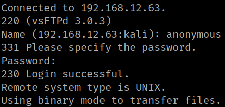
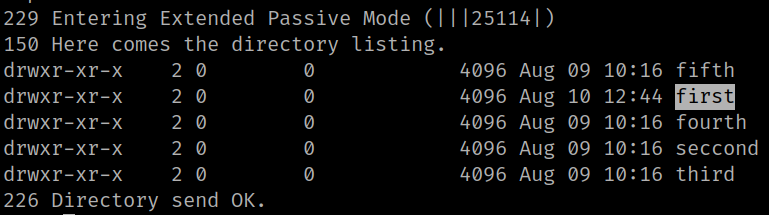
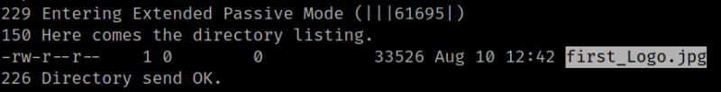

1. Create a FTP anonymous connection with the victim's machine. Credentials anonymous:anonymous.
$ ftp 192.168.12.63
Output:

2. List the files.
ftp> ls
Output:

There's a directory called “first".
3. Go to that directory and list it.
ftp> cd first
ftp> ls
Output:

There's an image file that can be interesting.